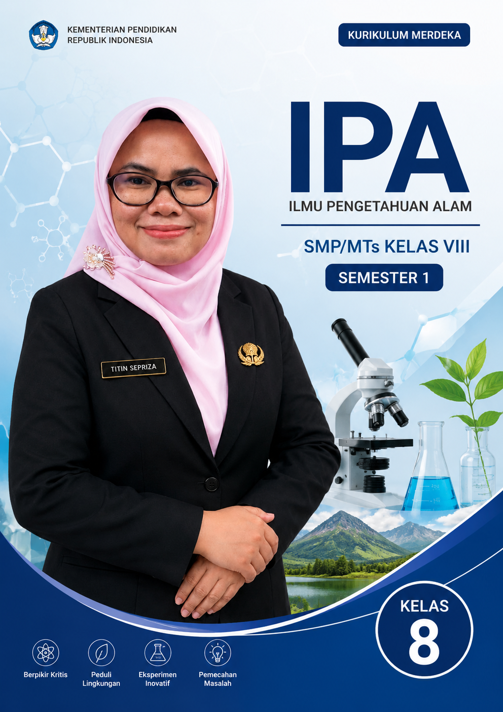

Buku pelajaran IPA yang dirancang khusus untuk siswa kelas VIII MTs, membahas konsep-konsep sains secara menyeluruh dengan pendekatan yang mudah dipahami dan relevan dengan kehidupan sehari-hari.
Lihat Daftar Bab
Buku ini disusun sebagai panduan belajar Ilmu Pengetahuan Alam bagi siswa kelas VIII MTs pada Semester 1. Materi disajikan secara sistematis dengan bahasa yang mudah dipahami, dilengkapi ilustrasi, contoh-contoh dalam kehidupan sehari-hari, serta latihan soal untuk mengasah pemahaman siswa.
Materi IPA terstruktur dari sel hingga pesawat sederhana
Konsep ilmiah yang relevan dengan kurikulum terkini
Dikaitkan dengan kehidupan sehari-hari siswa
Evalusi pembelajaran di tengah dan akhir semester
Bab 1–4: Sistem Organ Manusia (Sel, Pencernaan, Peredaran Darah, Pernapasan)
Bab 5: Ujian Tengah Semester (UTS) – Review Materi Bab 1–4
Bab 6–7: Sistem Ekskresi serta Zat Aditif dan Adiktif
Bab 8–9: Energi dan Pesawat Sederhana dalam Kehidupan Sehari-hari
Bab 10: Ujian Akhir Semester (UAS) – Review Komprehensif
Klik pada setiap bab untuk membuka materi lengkap (file .html terpisah). Semua bab akan terbuka di tab baru.
Untuk informasi lebih lanjut tentang buku ini, silakan hubungi:
Email: t12nsepriz4@gmail.com
Institusi: MTsN 4 Lima Puluh Kota
Tahun Terbit: 2026